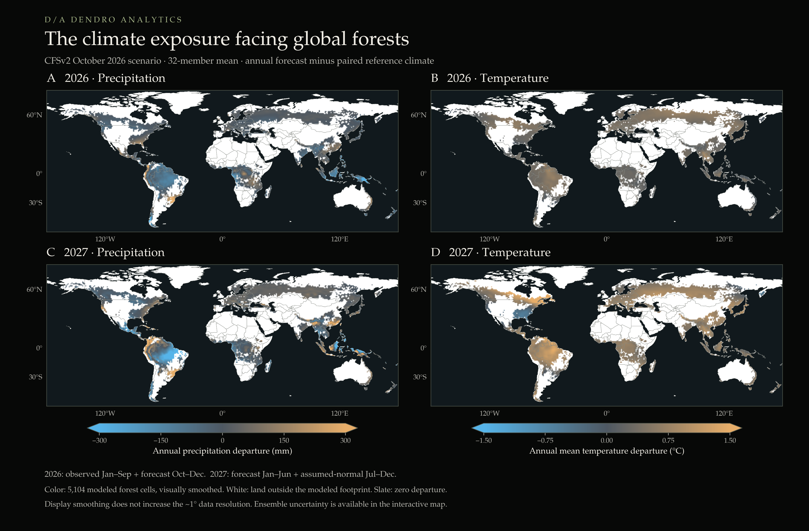
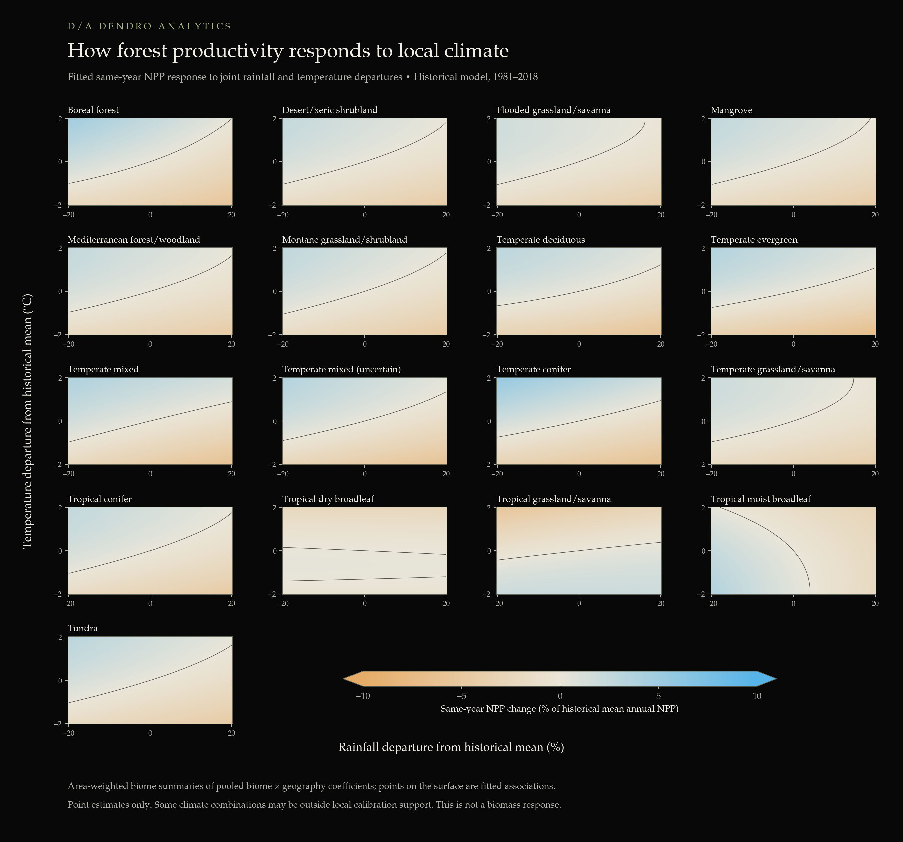
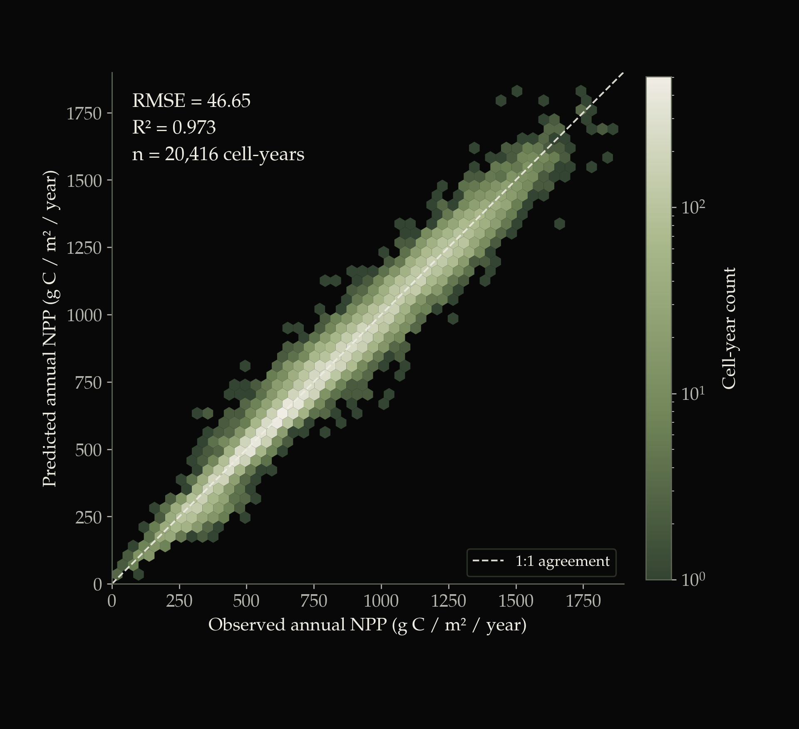
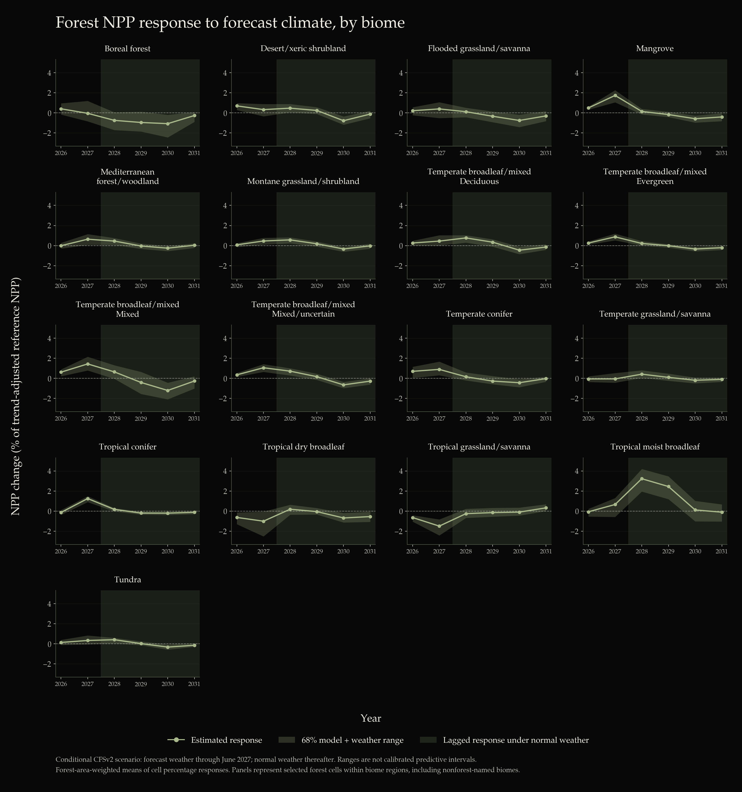
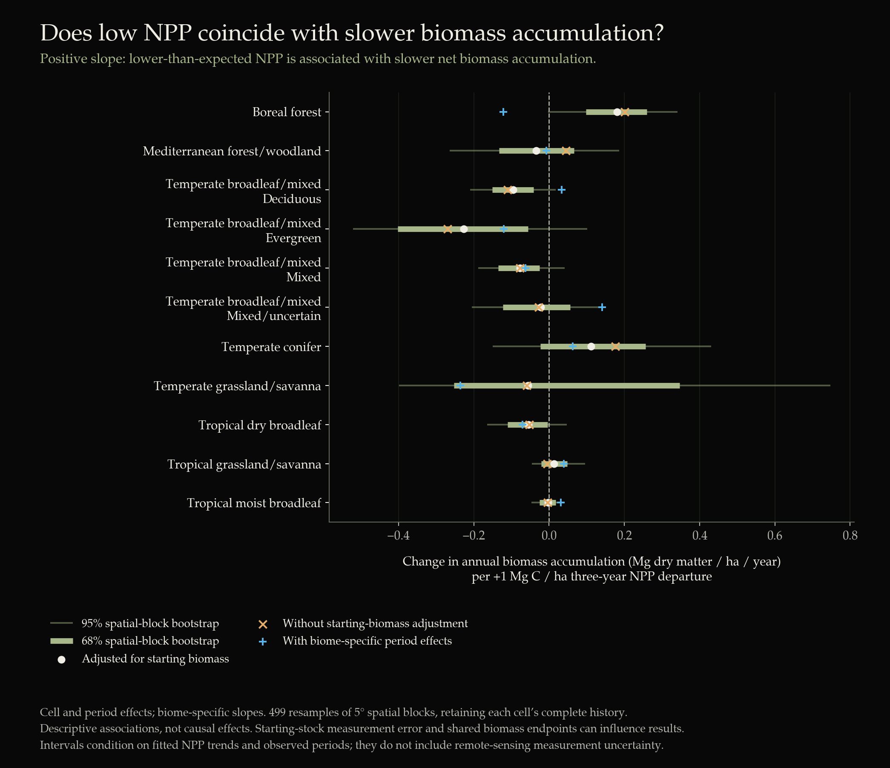
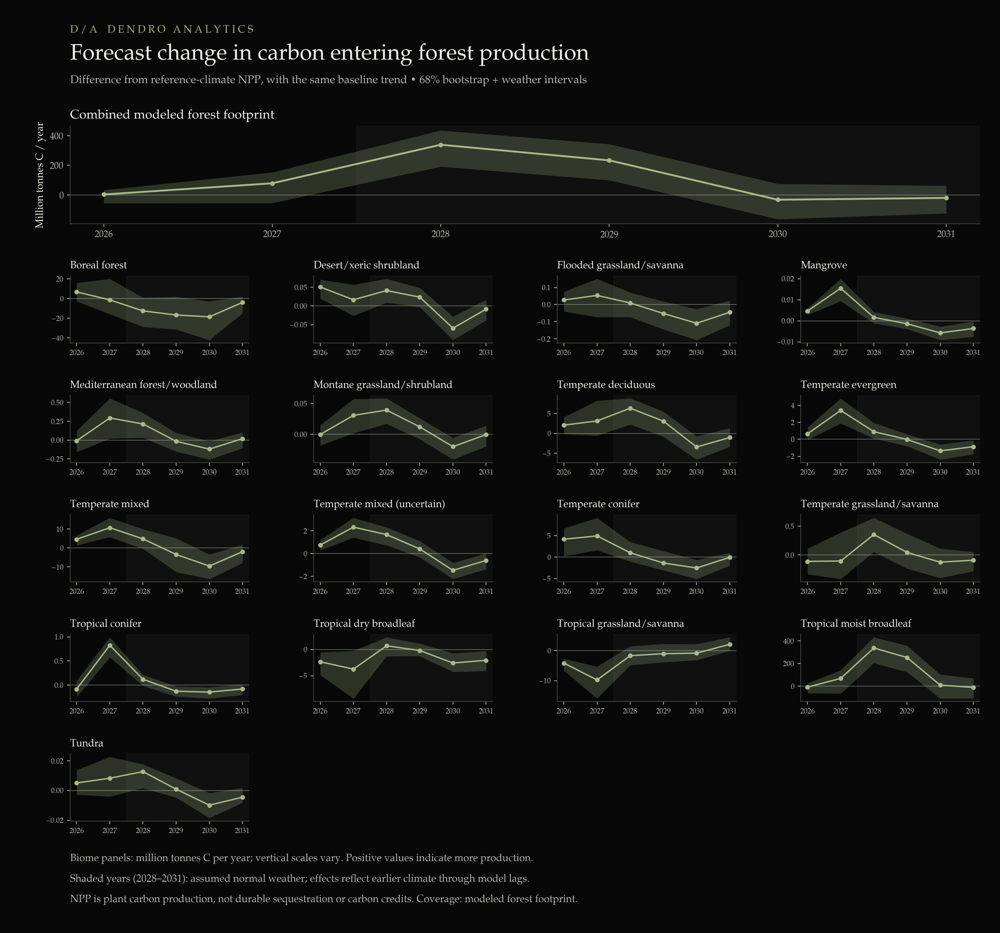
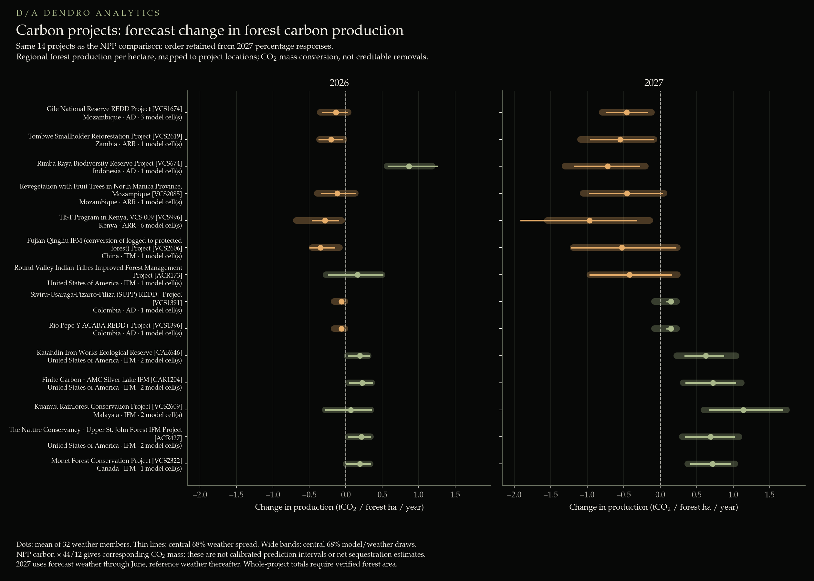

2026 Super El Niño: impacts on carbon project productivity.
An ocean-temperature index cannot tell us how every forest will respond. Local rainfall and temperature provide a more direct starting point. This analysis links a seasonal climate scenario to historical forest productivity—and maps the resulting exposure across carbon projects.
Explore the climate & project map ↗
Scenario analyzed: the saved October 2026 CFSv2 ensemble. This case study does not independently establish that a super El Niño will occur.
The 2026 Super El Niño forecast
El Niño is the warm phase of the El Niño–Southern Oscillation: unusually warm surface waters in the central and eastern tropical Pacific interact with the atmosphere, shifting rainfall and temperature patterns around the world. Events recur irregularly, typically every two to seven years, and vary substantially in strength and regional effects. NOAA’s ENSO overview.
In its October 8, 2026 assessment, NOAA’s Climate Prediction Center reported a strengthening El Niño and an 83% chance that the October–December three-month Relative Oceanic Niño Index would reach at least +2.5°C. It expected strong-to-very-strong conditions to remain likely through January–March 2027. That outlook motivates the “Super El Niño” framing here, but an ocean-index forecast does not determine the response of an individual forest or carbon project.
Past major events show why this distinction matters. The 1997–1998 El Niño drought temporarily halted the biomass carbon sink in monitored Bornean forests, with increased tree mortality. During the 2015–2016 event, a study of 123 South American tropical forest plots found that elevated mortality reduced their biomass carbon sink to approximately zero; growth and recruitment did not decline across the plots as a whole. These are distinct biological pathways, so reduced carbon storage should not automatically be described as reduced productivity. Qie et al. (2017); Bennett et al. (2023).
Effects also vary within and between regions. Local water availability, temperature, forest condition and the timing of exposure matter; an assumed uniform decline across the tropics, or a uniform increase across boreal forests, would miss that variation. This case study therefore estimates responses from local climate conditions rather than assigning every forest the same response to an ENSO index.
I combine the saved October 2026 CFSv2 climate scenario with historical climate–NPP relationships, test the model on withheld years, and overlay the resulting estimates on carbon-project boundaries. The analysis asks:
- Where could forecast rainfall and temperature departures increase or decrease forest productivity?
- How large could those changes be, and how long might the modeled response persist after weather returns to normal?
- Which carbon-project locations share those exposures, and where is closer monitoring warranted?
Forecast context checked October 12, 2026. The calculations below retain the saved October 2026 scenario; they are not a live forecast feed or a validated conversion to biomass change or credit delivery.
Where could productivity change, and for how long?
For a forest carbon project, an El Niño outlook becomes useful when it can be translated into local exposure. How much warmer or drier might the project’s landscape become? How has productivity responded to comparable conditions? How quickly will ecosystems recover?
I approached those questions in sequence: assemble the forecast climate departures, estimate historical climate–productivity relationships, test predictions on withheld years, then apply the fitted relationships to the forecast scenario. Project boundaries provide the final layer, connecting a regional signal to places where carbon projects operate.
The outcome is a screening tool for conditional productivity responses. It identifies contrasting exposures and possible delayed effects. It does not yet provide a reliable conversion from climate exposure to biomass loss or credit under-delivery.
The same event can mean different local weather.
The first figure shows annual precipitation and temperature differences between the saved forecast and its paired reference-weather scenario. Each colored location represents a modeled forest grid cell. The maps use the mean of 32 CFSv2 weather members, with identical scales across years so that changes in exposure remain comparable.
The pattern is geographically uneven. Parts of the Amazon show reduced precipitation alongside higher temperatures, while rainfall differences elsewhere change sign across relatively short distances. A global ENSO index cannot represent that local combination. The interactive map lets a reader inspect rainfall, temperature and their ensemble ranges together.
The forecast horizon matters. For 2026, observed January–September weather is followed by October–December forecasts. For 2027, January–June forecasts are followed by assumed-normal July–December weather. These are annual scenarios assembled from observations, forecasts and explicit assumptions, not forecasts of every month in both years.

Rainfall and temperature need to be considered together.
The response model uses annual net primary productivity (NPP) from 1981–2018, aligned with local precipitation and temperature. NPP describes carbon entering plant production after plant respiration. It includes more than wood production and is not the same quantity as standing biomass.
The fitted model includes rainfall, temperature, their quadratic terms and their interaction at each lag from the current year through four years earlier. Climate relationships vary across biome × geography groups, with partial pooling to limit unstable estimates. Cell-level intercepts and trends account for persistent differences in productivity and its historical trajectory.
Figure 2 isolates the same-year association. Moving horizontally changes rainfall relative to a cell’s historical mean; moving vertically changes temperature. Blue indicates increased modeled NPP and amber indicates a decrease. The dark contour marks zero response. Curved surfaces and, for tropical dry broadleaf forests, multiple zero crossings, come from the nonlinear terms. Those contours are fitted relationships, not established ecological thresholds.
These surfaces summarize local coefficients within each biome. They are point estimates, and some displayed climate combinations may be outside local historical support. The map viewer also includes a one-year climate-shock experiment, showing the separate response at each lag.


The estimated response can outlast the forecast weather.
For each grid cell, the model predicts NPP under two weather trajectories while retaining the same baseline trend. The reported percentage is the difference between those predictions divided by expected NPP under reference weather at the target date. This separates the climate scenario from the fitted background trajectory; the trend is empirical and does not explicitly model forest age.
Annual lag terms allow different timing across biome–geography groups. A response at year four does not mean the forest is unaffected until then. Earlier and later coefficients can contribute separately, with different magnitudes and signs.
From 2028 onward, both scenarios assume normal weather. Any remaining difference comes from the earlier climate exposure passing through the model’s lag terms. The later gains in some tropical groups and reductions in boreal forests are therefore model-derived persistence under that assumption, not weather forecasts extending to 2031.
Loading biome trajectories…
View original figure with uncertainty ranges

Translate productivity into carbon production first.
NPP is already measured in carbon units. The direct translation is the difference between forecast and reference NPP multiplied by forest area. I calculate that difference for every grid cell and uncertainty draw before aggregating; multiplying an area-averaged percentage by total baseline productivity would give a different quantity.
Across the modeled footprint, the 2027 scenario yields approximately 79 million tonnes more carbon in annual plant production, with a central 68% range from 55 million tonnes less to 153 million tonnes more. The interval spans zero. This is a modeled-footprint total, not a complete accounting of the global land carbon sink.
Multiplying carbon by 44/12 expresses the corresponding CO₂ mass. It does not establish how much is stored durably: changes in allocation, turnover, mortality, decomposition and disturbance still intervene between plant production and carbon-stock change.
What happened when I tested the NPP–biomass link?
The biomass comparison used 33,033 three-year cell intervals across 4,719 matched cells. Integrated NPP correlated with standing biomass, but that spatial relationship did not translate into a stable relationship with biomass accumulation. Within-cell models relating NPP departures to annualized biomass change gave mixed biome-level coefficients, with important sensitivity to period controls.
Consequently, this case study does not convert NPP responses into predicted biomass accumulation, mortality, permanence or credit losses. The biomass bridge remains an unresolved part of the analysis.

Loading biome trajectories…
View original figure with uncertainty ranges

Different locations imply different exposures.
I overlaid the modeled responses with the public project-boundary database described by Karnik and colleagues. Of 575 source projects, 471 received an estimate; 385 met the primary comparison screen of at least 80% polygon overlap with modeled grid cells. That screen measures geographic coverage, not forecasting skill or actual forest cover inside a project.
The 2027 NPP point estimates illustrate the contrast: approximately −2.09% for Gile, −1.83% for Rimba Raya, +2.59% for Kuamut and +3.48% for Monet. These are regional forest responses mapped onto project locations, not models fitted to those projects’ species, ages, management or inventories.
Figure 6 expresses the responses as the corresponding CO₂ mass in production per forest hectare per year. Keeping a per-hectare denominator avoids assuming that every hectare inside a project boundary is forest. Absolute whole-project tonnage would require a verified within-boundary forest area.
These comparisons can support targeted questions: which projects warrant closer drought monitoring, which locations share a common exposure, and where would additional field evidence be most useful? A positive productivity estimate does not rule out fire, mortality or delivery risk. A negative estimate is not a forecast of lost credits but may indicate lower than expected carbon sequestration.

Start with the climate.
Then inspect the project.
The viewer connects the evidence: local rainfall and temperature departures, ensemble spread, biome-specific sensitivity and the project-level NPP trajectory. Select a grid cell or jump to a project to see the values behind the map.
Open interactive climate map ↗ Open project viewer ↗
The practical output is an exposure screen with explicit assumptions—not a forecast of credit issuance.
What supports the estimates—and what limits them.
The aligned historical estimation panel contains 193,952 cell-year records (5,104 cells × 38 years). The analysis aggregates the productivity product to a common forest footprint and aligns annual local climate histories, including pre-1981 years needed for lagged predictors.
The model is penalized regression, not a Bayesian fit. It includes 75 biome × geography groups, cell intercepts and partially pooled cell trend deviations. Uncertainty uses 199 circular five-year temporal-block refits and two sampled weather members per refit, producing 398 combined draws. Full temporal blocks preserve more of the within-series dependence than resampling individual cell-years, but they do not reproduce every source of uncertainty.
The NPP observations are themselves a satellite-driven model product rather than direct inventories. The MuSyQ product combines remotely sensed vegetation information with a productivity algorithm; its associated methods include meteorological inputs. Accordingly, a climate–NPP relationship estimated from that product may partly reflect its construction. This analysis is not independent field confirmation of the inferred climate response.
Other limitations are material: the productivity record ends in 2018, making the 2026–2031 baseline a trend extrapolation; some forecast weather lies outside historical calibration ranges; the archived forecast validation spans few origins; and the approximately 1° grid cannot resolve within-project forest conditions. The rainfall extraction also contains flagged extreme annual totals that warrant review before stronger predictive claims. The saved scenario and historical project statuses should be refreshed before a public launch.
- Sun et al. / MuSyQ productivity dataset, 1981–2018. Dataset and algorithm documentation; associated paper: Wang et al. (2021), New Global MuSyQ GPP/NPP Remote Sensing Products From 1981 to 2018, IEEE JSTARS 14, 5596–5612.
- ECMWF ERA5. Historical local precipitation and temperature inputs.
- NOAA CFSv2 seasonal climate forecasts. Weather-model context; this analysis uses its saved October 2026 scenario rather than updating automatically from the current page.
- Karnik et al. (2025), An open-access database of nature-based carbon offset project boundaries. Project database archive.
Results, figures and validation statistics are from the analysis assembled for this case study. Source documentation describes the input products; it does not validate these particular scenario estimates.
Interactive trajectories use the original trend-adjusted 68% NPP summaries. Carbon-production point estimates sum (forecast NPP − reference NPP) × modeled forest area within each biome, then multiply tonnes C by 44/12. The carbon plot does not reconstruct uncertainty from cell-level percentile bounds. The retained static figure contains the original joint-draw uncertainty analysis.